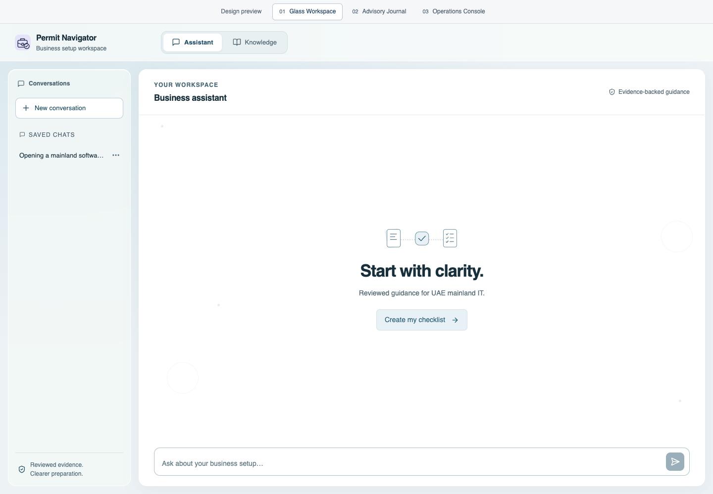
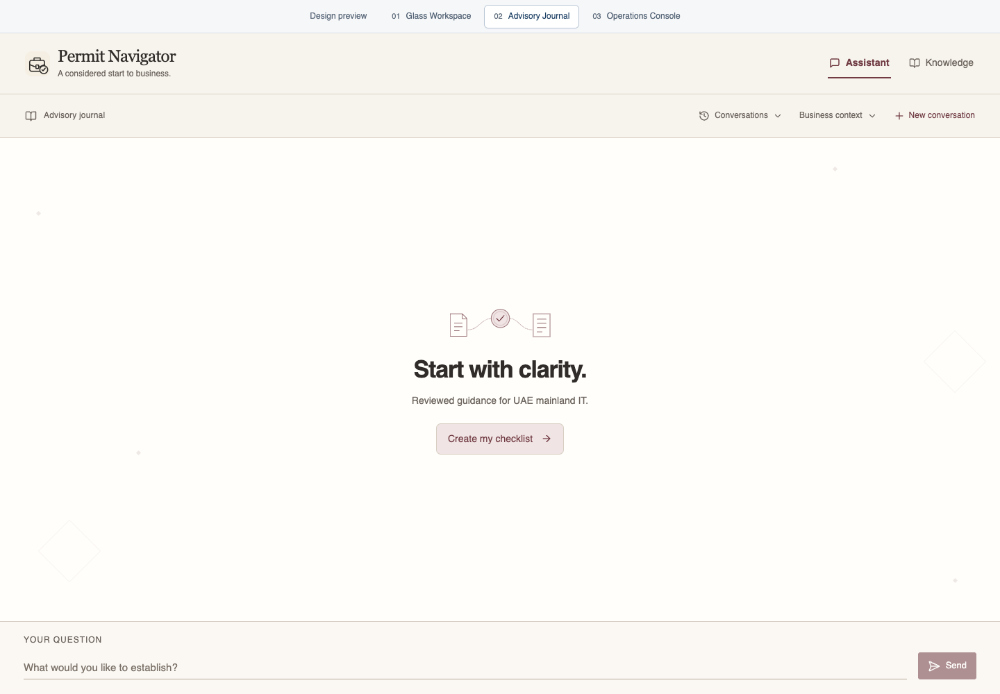
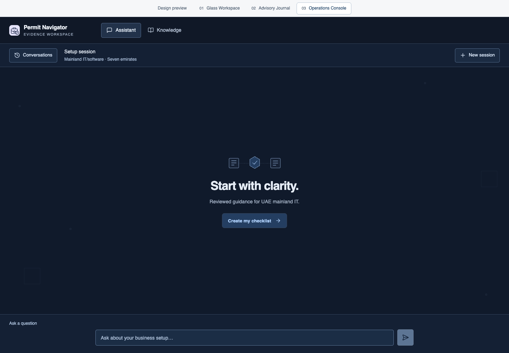

OPTION 01
Glass Workspace
Frosted navigation, a focused conversation and a document library.
Opaque reading surfaces · dedicated source reader
Each direction uses the same chat, business-profile and source-review workflows. Compare them in the app with the Design Preview controls, or use the screenshots below.
Frosted navigation, a focused conversation and a document library.
Opaque reading surfaces · dedicated source reader
A conversational casebook with a dated evidence journal.
History drawer · paper-like transcript · edition review
A searchable source queue with a persistent evidence inspector.
Operational transcript · source search · review tabs